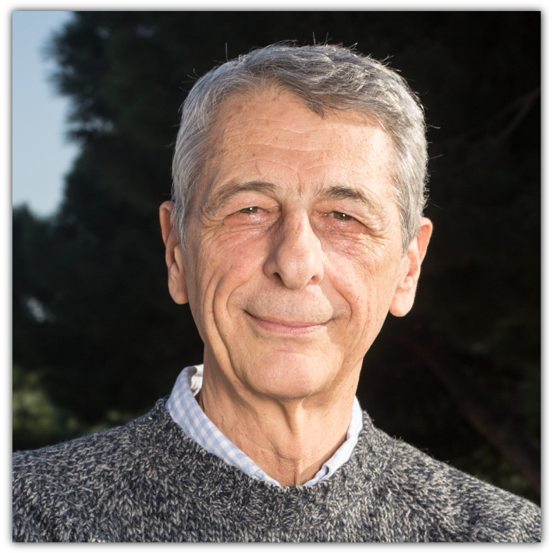
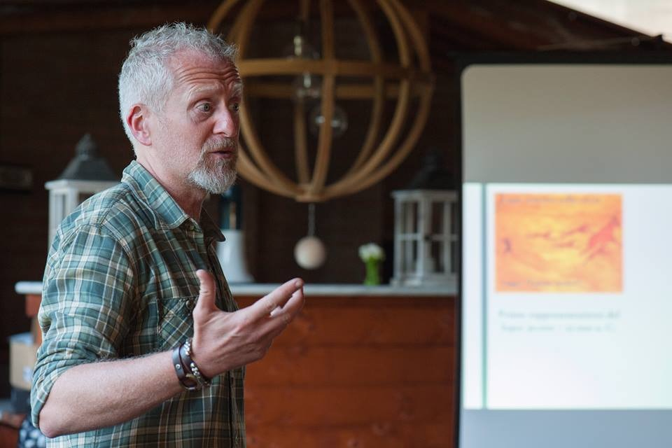

Chi siamo
L’Istituto di Ecologia Applicata, (IEA) è un’associazione senza fini di lucro fondata nel 1987 che si propone di fornire supporto ad istituzioni pubbliche e private, in Italia e all'estero, per la realizzazione di interventi connessi alla gestione delle risorse naturali, in particolare della fauna e degli habitat terrestri e marini.
IEA promuove inoltre lo sviluppo di ricerche e progetti di ecologia che possano consentire significativi progressi nel campo della valorizzazione e conservazione partecipativa delle risorse naturali.
IEA si avvale di una collaborazione consolidata con Sapienza Università di Roma, dalla quale provengono la maggior parte dei suoi collaboratori. La collaborazione con Sapienza ed altri atenei garantisce l'applicazione delle più aggiornate strategie di ricerca scientifica e consente di ottenere risultati attraverso metodi e approcci rigorosi.
Dotato di strumentazione all’avanguardia nel settore delle ricerche ecologiche di campo e con un forte orientamento all'utilizzo dei sistemi informativi geografici (GIS) per la pianificazione del territorio e la gestione della fauna selvatica, IEA ha ampliato le proprie competenze nella gestione dei conflitti tra le attività antropiche e la fauna selvatica, in particolare mammiferi, ed è in grado di affrontare, con un ampio spettro di competenze, gran parte delle problematiche connesse con lo studio e la gestione dell’ambiente.
CONSIGLIO DIRETTIVO

Luigi Boitani Presidente
Luigi Boitani, fondatore e presidente dell'Istituto di Ecologia Applicata di Roma, ha esperienza decennale nella ricerca e nell'insegnamento universitario in Biologia della Conservazione. È stato professore ordinario all'Università Sapienza di Roma fino al 2016, quando è stato nominato professore emerito. Ha seguito oltre 260 tesi di specializzazione e oltre 35 tesi di dottorato presso università italiane e straniere. Negli anni si è specializzato nella conservazione e gestione di grandi mammiferi e nella gestione delle aree protette. Dal 1973 si è occupato della conservazione del lupo (Canis lupus) ed altri grandi carnivori a scala sia Italiana che Europea. È stato autore di diversi piani di gestione per aree protette a livello nazionale, ma anche internazionale (es. Africa). Ha promosso la produzione di piani di gestione per il lupo a livello europeo e ha fatto seminari in molte università europee, e americane. È membro di oltre 25 organizzazioni di professionisti, gruppi di lavoro e consigli direttivi, incluso il ruolo di Chair della Iniziativa sui Gradi Carnivori Europei della IUCN.

Marco Lucchesi Consigliere
Marco Lucchesi è libero professionista, e membro del consiglio direttivo dell'Istituto di Ecologia Applicata dal 2021. Con lunga esperienza nei campi dell'ecologia e gestione della fauna selvatica, valutazione di incidenza, formazione tecnica e monitoraggio dei vertebrati, è socio attivo dal 2020. Dopo aver conseguito la laurea in Scienze Biologiche presso l'Università di Pisa, ha collaborato con diversi enti pubblici e privati per attività di formazione, monitoraggio e gestione ed ha mantenuto i suoi interessi sull'ecologia e conservazione dei vertebrati, con un focus particolare sui carnivori. Ha coordinato gruppi di volontari nell'ambito di diversi progetti, condotto corsi di formazione altamente specializzata e interventi divulgativi su temi di conservazione e gestione della fauna selvatica. E' socio dell'Associazione Teriologica Italiana per i gruppi GLAMM e GriMeC, membro del CAI, socio fondatore dell'associazione di promozione sociale "Selvatica", e socio della Società per gli Studi Naturalistici della Romagna e del Centro Ornitologico Toscano.

Valeria Salvatori Consigliere e segretario generale
La conservazione della Natura e la ricerca e gestione delle specie selvatiche sono gli interessi principali di Valeria Salvatori, bio-geografa romana. Dal 1992, ha lavorato in ambiente internazionale, collaborando con Istituti di ricerca in vari paesi europei e non. Dopo aver conseguito la laurea in Scienze Biologiche presso la Sapienza Università di Roma nel 1995 ha continuato ad occuparsi di conservazione delle specie sia a livello tecnico che dal punto di vista della gestione dei conflitti di interesse tra la conservazione di specie selvatiche e le attività antropiche. Nel 2002 ha conseguito il dottorato di ricerca (Ph.D.) in Geografia presso l’Università di Southampton (GB), con un progetto di ricerca svolto sul territorio dei Monti Carpazi, con l’obiettivo di identificare aree idonee per la conservazione di orsi, linci e lupi. Ha poi continuato ad occuparsi di queste specie con una serie di progetti europei nell'ambito del programma LIFE, molti incentrati sulla gestione dei conflitti. Ha una buona esperienza didattica, a livello scolastico e universitario, tanto italiano quanto straniero. Al momento è responsabile del contratto di servizio per “L'istituzione di piattaforme locali per la coesistenza con i grandi carnivori in Europa”, finanziato dalla UE, che prevede la facilitazione dei processi partecipativi in Italia, Romania, Spagna, Svezia, Francia e Germania, ed è consulente di ISPRA/Federparchi nell'ambito del Monitoraggio Nazionale del lupo.
Gli altri soci dell'Istituto di Ecologia Applicata sono:
DAVIDE PAGLIAROLI
SIMONE RICCI
I membri del Comitato Etico di Progetto (CEP) dell'Istituto di Ecologia Applicata sono:
PROF. CORRADO DEL BO' (membro esterno)
PROF.SSA BARBARA DE MORI (membro esterno)
PROF.SSA LETIZIA MINGARDO (membro esterno)
PROF. RICCARDO RAO (membro interno)
PROF. LUIGI BOITANI (membro interno)
SEGRETERIA: AGNESE MARINO